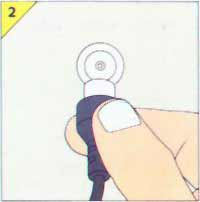
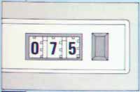

Este capítulo tiene como objetivo explicarle cómo comenzar la exploración del potencial de su ordenador ZX Spectrum +. En él se explicará cómo conectar y organizar su sistema para que pueda entrar en acción cuando usted se lo indique. Cuando haya superado esta etapa, usted podrá elegir entre dos caminos. Una primera posibilidad es introducir algunos programas en su ordenador Spectrum y de esta forma observar su operación, fijándose en las capacidades de color y sonido, o, por el contrario, puede preferir aprender a utilizar programas comerciales de ordenador, que se obtienen listos para su proceso por el ordenador. Este es el caso de los múltiples juegos de ordenador. Cualquiera que sea su elección, usted tendrá la oportunidad de disfrutar plenamente de las posibilidades que le ofrece su nuevo ordenador.
COMO ORGANIZAR SU SISTEMA ZX SPECTRUM +
El procedimiento para organizar su sistema Spectrum es el siguiente: en primer lugar verifique que estén disponibles los elementos enumerados en la lista de control que se da a continuación. En segundo lugar, siga las instrucciones detalladas en la página contigua.
Conecte todos los componentes de forma que se encuentren seguros. Recuerde que si se desconecta la alimentación o se desenchufa el ordenador durante su operación, se perderán todos los programas, la información o los resultados almacenados en su memoria.
Después de haber terminado de trabajar con su ordenador, apáguelo y desenchúfelo.
Lista de control: ¿Tiene todos los elementos necesarios?
Al desembalar su ordenador usted encontrará:
- Su ordenador ZX Spectrum +.
- Su fuente de alimentación. Debe ser 9 voltios CC que son los adecuados para su ordenador Spectrum.
- Cable de conexión a la antena de su televisor. Conecte su Spectrum con la televisión.
- Cable de la grabadora de cassette. Conecte su Spectrum con la grabadora de cassette.
- La tarjeta de garantía. Complétela y envíela según se indica en ella.
- Una cassette con la introducción al empleo de su ordenador.
- Este manual.
Usted deberá añadir los elementos siguientes:
- Una televisión.
- Una grabadora de cassette.
- Un enchufe eléctrico para conectar el sistema a la red.
Organización de su equipo: preguntas y respuestas..
¿Es necesario que el televisor sea en color?
No, no es necesario, aunque si su televisor es en blanco y negro usted no podrá apreciar los colores que produce su Spectrum.
¿Sirve cualquier tipo de televisor?
En principio su Spectrum le ofrecerá una imagen en cualquier televisor. Si no ocurre así, la causa del problema puede ser que el ordenador y el televisor tengan diferentes sistemas de generación de imágenes. Esto puede ocurrir si su televisor es un aparato muy antiguo, o si su televisor y su Spectrum se han comprado en países distintos. En caso de duda consulte a su vendedor de televisores.
¿Puede emplearse un monitor en lugar de un televisor?
Sí. Puede que el vendedor de su ordenador pueda también suministrarle un monitor. El monitor le ofrecerá las imágenes de su Spectrum con una mayor calidad.
¿Puedo utilizar el accesorio ZX 16 RAM?
No. Este accesorio RAM (o "RAM pack") solamente puede ser utilizado con el ordenador Sinclair ZX81.
Conexiones de su ZX Spectrum + a la red eléctrica.
Instale primero un enchufe en el cable cd la alimentación de su ordenador. En algunos países es necesario instalar un fusible de 3A en el enchufe eléctrico. Observe que su Spectrum no precisa de toma de tierra, aun en el caso de que el enchufe que usted instale lleve tres patillas. A continuación para conectar su Spectrum a la red y al televisor, vaya cumpliendo las etapas siguientes siguiendo la secuencia de las ilustraciones. Cuando haya conectado debidamente el sistema, diríjase a la página siguiente donde encontrará las instrucciones para sintonizar el sistema.
-
Introduzca el cable del televisor en el enchufe de su Spectrum marcado TV. Solo uno de los enchufes del cable de conexión del televisor se ajustará a esta conexión.
-
Retire el cable que conecta la antena del televisor. Conecte ahora el cable del televisor de su Spectrum en el conector de antena de su televisor.

-
Conecte el televisor y baje el volumen al mínimo. Ya lo tiene usted todo preparado para proceder a la etapa siguiente: sintonizar el televisor para que reciba las señales que le envía su Spectrum.
-
Inserte el conector pequeño del cable eléctrico en el enchufe de su Spectrum marcado 9VDC.
-
Conecte el enchufe a la red. Recuerde que su Spectrum no lleva interruptor general de conexión/desconexión (ON/OFF).
Enchufes y conectores del Spectrum.
SINTONICE SU TV.
Su Spectrum emite una señal de video de televisión en color en las frecuencias correspondientes al canal 36 de la banda de UHF. Por ello, se hace necesario sintonizar el televisor en este canal para que proyecte la imagen generada por el ordenador.
Después de conectar su ordenador al televisor, la siguiente etapa es sintonizar el televisor hasta que la pantalla muestre el mensaje de Spectrum, tal y como aparece en la ilustración. Si no puede recibir esta imagen en su televisor, o si sus colores no están bien, le sugerimos que lea las instrucciones siguientes:
Tipos de controles de sintonización.
-
Sintonización variable.
Un control de sintonización variable selecciona cualquier canal. Haga girar la perilla hasta obtener el mensaje.
-
Sintonización de botón.
Seleccione uno de los botones de sintonización para utilizarlo como botón de sintonización de su ordenador. Ajuste el botón hasta obtener el mensaje en la pantalla del televisor. Si le es posible, elija un botón que no se vaya a utilizar con posterioridad para sintonizar otros canales de televisión; de esta forma evitará el tener que reajustarlo cada vez que desee utilizar su televisor para que opere con el Spectrum.
-
Sintonización electrónica.
Este método de sintonización es similar al de botón, excepto que el equipo se ajusta automáticamente en el canal seleccionado.
Cómo verificar los colores del Spectrum.
Para verificar los colores del Spectrum basta con oprimir la tecla B y a continuación introducir un número del 1 al 6. A continuación se producirá lo siguiente: (1) el mensaje desaparece de la pantalla; (2) aparece la palabra BORDER (borde) y el número correspondiente. Ahora oprima la tecla ENTER. La zona que rodea la pantalla cambiará al color indicado en la tecla de número que se seleccionó. Las pantallas que aparecen a continuación muestran que cuando usted introduce las instrucciones BORDER 4 - ENTER, BORDER 3 - ENTER, y finalmente BORDER 7 (en este orden), el color del borde cambia a blanco
BORDER 4 BORDER3
CUALES SON LAS CAPACIDADES DE SU ZX SPECTRUM +
En primer lugar, vamos a experimentar.
Con su Spectrum conectado y el televisor sintonizado, haga la prueba de oprimir algunas teclas de su ordenador. Como puede apreciar, inmediatamente aparecen palabras y letras así como algunos números en la pantalla de televisión.
Sin embargo, Vd. debe saber programar el Spectrum dándole instrucciones de lo que debe hacer. No tenga miedo, pruebe las teclas.
Ahora oprima el botón de reajuste (reset) ubicado en el costado izquierdo de su ordenador, y se encontrará listo para comenzar a trabajar con su Spectrum. Las cuatro páginas siguientes le demostrarán lo que su Spectrum puede hacer en la pantalla de televisión.
Como introducir información o instrucciones en su ordenador
Para introducir cualquier palabra, letra o número en su ordenador, tome nota primero de su posición sobre la tecla y a continuacion utilice la misma secuencia de teclas selectoras que se indica a continuacion:
Los detalles completos sobre como operar las teclas se dan en las páginas 20-21.
A continuación, estudiemos como programar su Spectrum.
Su Spectrum puede hacer muchas cosas, pero para que estas se realicen, necesita que usted le de una serie de instrucciones, cuyo conjunto se denomina programa de ordenador.
A continuación incluimos una colección de programas breves que demostrarán algunas de las características de su Spectrum. incluyen colores, sonido y gráficos. Todo lo que usted debe hacer es introducir el programa en el ordenador exactamente como se indica. Las imágenes de la pantalla de televisión le indican el resultado de sus operaciones con el teclado. Si desea experimentar con los programas, hágalo siguiendo las instrucciones que aparecen en la página opuesta bajo el encabezamiento "Como alterar un programa".
Cómo introducir y ejecutar un programa.
Cada serie de instrucciones se muestra en forma de lista, a la que llamamas "listado". Los listados de los programas están formados por partes diferentes, cada una de ellas empieza con un número, por ejemplo 10, 20, etc. y se llama línea del programa.
En cada una de las líneas del programa se encontrarán palabras completas o abreviaciones compuestas de dos o más letras, tales como PRINT, LET, RND, PI, PAPER y GOTO. Son todas ellas palabras clave y no es necesario introducirlas letra por letra. Basta utilizar las teclas correspondientes, cada una de las cuales tiene escrita sobre ella una palabra clave (en la letra P del teclado está escrita, por ejemplo, la palabra clave PRINT). Para introducir una de estas instrucciones busque la palabra clave correspondiente en el teclado y siga las instrucciones que se dan en la sección que trata de cómo introducir información al ordenador del "capítulo 2".
A medida que usted introduce la información correspondiente a una línea, mediante el teclado, ésta va apareciendo en la parte inferior de la pantalla de la televisión. Al terminar la línea del programa, oprima la tecla ENTER. La línea cambiará de posición, desplazándose a la parte superior de la pantalla. Repita el mismo procedimiento para las demás líneas. Si comete un error, consulte la sección sobre "Cómo corregir errores" en la página siguiente.
Después de haber introducido todas las líneas del programa en su ordenador, oprima la tecla R. La palabra clave RUN aparece en la pantalla. Ahora oprima la tecla ENTER y su Spectrum entrará en acción, ejecutando el programa.
Como alterar un programa.
Espere hasta el final del programa o interrúmpalo mediante la instrucción BREAK. A continuación oprima V (CLS), seguida de ENTER, K (LIST), y finalmente de ENTER. Como resultado de estas instrucciones el listado del programa aparecerá en la pantalla.
Estudie el listado y seleccione la línea del programa que desea modificar. Introduzca la línea del programa incorporando las nuevas instrucciones o información que desea incluir por el teclado, incluyendo su número, y finalmente oprima ENTER. La nueva línea aparecerá en el listado. Oprima R (RUN) y ENTER, el nuevo programa entrará en operación.
Algunos de estos programas, por ejemplo "Barras y Estrellas", llegan al final y producen el reporte 0 OK y el número de la última línea del programa. Con ello el ordenador le indica que ha ejecutado la totalidad del programa. Para reiniciarlo solamente es necesario oprimir R (RUN) y ENTER.
Otros programas continuan operando, por ejemplo el del "Mosaico Loco", o se reinician automáticamente, como "Amanecer".
Si ha oprimido una tecla equivocada, o si no ha oprimido correctamente las teclas de cambio o EXTEND MODE ¡no se preocupe! Simplemente oprima la tecla DELETE y la última palabra clave, signo, letra, o número desaparecerá. Para borrar más mantenga pulsada la tecla DELETE.
Puede ocurrir que Vd. introduzca en el ordenador una línea con errores. En este caso el ordenador se detenrá y producirá un mensaje de error en la parte inferior de la pantalla. Este mensaje le indicará la línea incorrecta. A continuación, debe Vd. introducir la línea correctamente y oprimir las siguientes teclas: ENTER, R (RUN) y ENTER. Una vez hecho esto el programa se ejecutará sin más problemas.
Después de haber terminado un programa, y si desea introducir otro totalmente nuevo, el procedimiento es esperar hasta que se haya completado la ejecución del programa con el que estamos trabajando. También es posible interrumpirlo mediante el comando BREAK.
Para borrar el programa antiguo de la memoria del ordenador puede elegirse entre los dos procedimientos siguientes. Un procedimiento es oprimir dos teclas: primero A (NEW) y luego ENTER. La pantalla de televisión se apaga por unos instantes y luego aparece el mensaje de Spectrum.
Por el contrario, también se puede utilizar un procedimiento más sencillo: basta con oprimir el botón de reinicialización o reset. Su efecto es el mismo que si usted apagara su Spectrum y lo conectara de nuevo.
Ahora Vd. puede elegir. Si desea conservar alguno de estos programas para volverlos a usar en el futuro, puede almacenarlos grabándolos en cintas de cassette. Para averiguar el procedimiento que debe seguir para hacerlo consulte la sección "Cómo almacenar sus programas", en la página 38.
Por último, si desea probar algunas cintas con programas pregrabados, le sugerimos que estudie la sección "Utilización de los programas comerciales de ordenador"..
COMO UTILIZAR PROGRAMAS COMERCIALES DE ORDENADOR.
Cuando usted introduce un programa en el Spectrum desde el teclado, a medida que oprime cada tecla está produciendo una secuencia de señales electrónicas codificadas. Estas señales se dirigen a la memoria del Spectrum donde se almacenan para que el ordenador las utilice cuando reciba la instrucción de ejecutar el programa. Las instrucciones de que hablamos, permanecerán en la memoria del ordenador hasta que usted las borre, por ejemplo introduciendo la instruccion NEW, presionando el botón de reinicialización (reset) o apagando el ordenador.
Sin embargo, no siempre es necesario introducir el programa a través del teclado. También se pueden comprar programas comerciales pregrabados. Estos programas se introducen automática y directamente en el ordenador. El empleo de este tipo de programas, de utilización inmeditata le ahorrará el trabajo de tener que introducir las instrucciones a su ordenador una a una a través del teclado cada vez que utilice su Specctrum. Otra ventaja es que podrá formar su propia biblioteca de programas, listos para su utilización inmediata, en lugar de tener que escribirlos e introducirlos en el ordenador usted mismo. Los creadores de programas de ordenador producen programas de todas clases, y estos tienen la ventaja de estar escritos por los mejores programadores. Disponemos de una amplia gama de programas para el Spectrum. Le sugerimos, por tanto, que examine el catálogo de programas de Sinclair Spectrum donde están anotados los programas disponibles. Esta amplia variedad le permitirá seleccionar el programa adecuado a sus necesidades.
Procedimiento para cargar programas en su Spectrum.
Las señales codificadas que se encuentran en la cinta que conteniene un programa consisten en una serie de notas agudas o graves registradas a una velocidad de unas 1500 notas por segundo. Cuando pasa por su grabadora la cinta magnética que conteniene el programa, el magnetófono producirá la secuencia de notas que componen el programa. Al conectarla al ordenador Spectrum, las señales codificadas que están en la cinta se transmiten directamente a la memoria del Spectrum donde se almacenan. A este proceso se denomina "carga del programa".
Estas dos páginas le explicarán como conectar su grabadora de cassettes. Las paginas 14 y 15 le indicarán como utilizar la grabadora.
Preguntas acerca de los programas pregrabados.
- ¿Qué es un programa pregrabado (software)?
"Programas pregrabados" o en inglés "software" son instrucciones que se introducen en el ordenador para hacerlo funcionar. Por el contrario, la expresión inglesa "hardware" se refiere al ordenador y a otros equipos periféricos.
- ¿Por qué se producen en cassettes los programas pregrabados?
Las cintas de cassette son fáciles de utilizar y no requieren ningún equipo especial. En este tipo de programas sólo se neesita un magnetófono de cassettes.
- ¿Cómo suenan los programas pregrabados en cassettes?
Pase uno de sus cassettes por la grabadora sin conectarla previamente a su Spectrum. El sonido es inconfundible, y está causado por las señales codificadas transmitidas al altavoz de la grabadora en lugar de serlo al ordenador. Las señales se transmiten a una velocidad tan alta que no se puede distinguir los sonidos individuales.
- ¿Existen otros tipos de programas pregrabados?
Sí. Pueden obtenerse programas almacenados en cartuchos ROM en lugar de cintas de cassette. Estos cartuchos se introducen en un alojamiento especial situado en la parte posterior de su Spectrum. Los programas almacenados en cartuchos ROM se cargan inmediatamente.
También se pueden obtener programas pregrabados en cartuchos de Microdrive. Estos accesorios contienen programas registrados magnéticamente, del mismo modo que en las cintas de cassette. Se pueden registrar varios programas en la misma cinta, y esta operación toma unos segundos en lugar de minutos, como sucede en el caso de los cassettes. Los cartuchos de Microdrive se utilizan en la unidad de Microdrive (ver página 46).
- ¿Cuál es la mejor grabadora de cassettes?
El Spectrum puede operar correctamente con una grabadora de cassettes económica portátil, preferiblemente conectada a la red y que no utilice pilas. La grabadora debe tener su propio control de volumen, pero no es esencial que tenga control de tono. También existen grabadoras de cassette especiales para funcionar con ordenadores. Estos equipos han sido diseñados para almacenar y cargar programas con una seguridad mayor que los equipos ordinarios.
- ¿Los programas registrados en cinta requieren cuidados especiales?
Como cualquier otra forma de almacenamiento que utilice impulsos magnéticos, los programas de la cassette se ven también afectados por campos magnéticos intensos. Por lo tanto, es aconsejable mantener los cassettes lejos de cualquier fuente de electricidad o equipo que utilice energía eléctrica. También deben mantenerse limpios y protegidos del polvo.
- ¿Se pueden utilizar cualquier tipo de programas pregrabados con su Spectrum?
No. Su ordenador solamente puede procesar programas pregrabados producidos especialmente para ordenadores ZX Spectrum +.
Conexión de su grabadora de cassettes.
Su ordenador viene con un cable especial para conectarlo a la grabadora de cassettes. Es el cable que lleva dos enchufes pequeños. Coloque el magnetófono junto a su Spectrum y enchufe el cable tal y como se muestra. La grabadora de cassettes y el Spectrum pueden estar conectados o desconectados durante la operacion, aunque es muy útil verificar que la grabadora no contenga ningún cassette al conectar o apagar el ordenador, para proteger los programas registrados en la cinta.
Conexiones correctas.
Introduzca cualquiera de los cuatro enchufes en el punto de conexion EAR situado en la parte posterior de su Spectrum.
Introduzca el otro enchufe del mismo color en el punto de conexion EAR de la grabadora de cassettes (si ésta tiene uno).
Si su grabadora no cuenta con un punto de conexion EAR, conecte el enchufe en uno de los puntos de conexión para auriculares (si es que la grabadora dispone de uno). También puede tratar de conectarlo al punto de conexión del altavoz externo.
Si el enchufe del cable de conexión de la grabadora no encaja en el punto de conexión de ésta, necesitará un adaptador o un cable especial con los enchufes correctos (podrá obtenerlo en alguna tienda de artículos eléctricos). El punto de conexión EAR del Spectrum requiere un enchufe macho de 3,5 mm y una señal de entrada de alrededor de 1 voltio.
Conexiones EAR y MIC.
Durante la carga del programa se pueden tener conectados los dos enchufes, tal y como puede verse en el dibujo, pero durante la operación de registro o "almacenamiento" (SAVE) de los programas es necesario desconectar el cable EAR.
Recuerde que:
Los enchufes del cable de la grabadora del Spectrum se identifican por un código de colores para así evitar errores en la conexión de los equipos entre ellos. Utilize siempre el mismo sistema para conectar la grabadora al ordenador: un color para los enchufes EAR y el otro para los enchufes MIC.
Algunas grabadoras se ven afectadas por otros equipos eléctricos que se encuentren cerca de ellas, distorsionándose las señales transmitidas entre el ordenador y la grabadora,. El resultado es que los programas no se cargan correctamente. Si su grabadora parece que no funciona, pruebe a alejarla del televisor o del ordenador.
PROCEDIMIENTO PARA CARGAR UN PROGRAMA.
Después de conectar la grabadora a su Spectrum, ya se encuentra Vd. en disposicio de cargar y ejecutar un programa. Puede utilizar una cinta que contenga los programas pregrabados, y por tanto listos para ser cargados en el ordenador, o una cinta grabada por usted mismo que contenga programas introducidos al ordenador desde el teclado. El procedimiento en ambos casos es idéntico.
Encienda la grabadora. Verifique que el Spectrum está debidamente enchufado y conectado (ON). Introduzca una cassette en la grabadora. Si el ordenador se encuentra en el proceso de ejecutar otro programa, espere hasta que se complete o interrúmpalo oprimiendo la tecla BREAK. A continuación introduzca en el ordenador la instrucción NEW o pulse el botón de reajuste (reset) para limpiar la memoria del Spectrum, aunque esto no es imprescindible porque la carga de un programa tiene el efecto de borrar el contenido de la memoria.
Siga ahora las instrucciones numeradas. Si tiene algún problema, diríjase a la página 16 y consulte la sección "Soluciones a los problemas que pueden surgir al cargar programas pregrabados en el ordenador".
Inserte el cassette y rebobine hasta el principio de la cinta.
Ajuste los controles de volumen y tono de la grabadora en los niveles requeridos. Pruebe el nivel de volumen correspondiente a dos tercios del máximo, y si su grabadora cuenta con un control de tono, ajústelo al tono agudo máximo.
Oprima la tecla J y aparecerá en la pantalla el mensaje LOAD. A continuación introduzca el nombre del programa, entre comillas, desde el teclado del ordenador, por ejemplo: LOAD "prog1".
Oprima la tecla ENTER. La pantalla se pondrá en blanco.
Ponga en funcionamiento la grabadora. El borde de la pantalla cambiará de color, volviéndose rojo o azul o una combinación de estos dos colores. Esta señal le indica que su Spectrum está buscando el programa.
Pocos segundos después unas franjas azules y rojas comenzarán a desplazarse a lo largo del borde. Esta señal indica que el Spectrum ha comenzado a recibir una señal.
En la pantalla aparecerá la palabra Program seguida por el nombre del programa, o bien la palabra Bytes seguida de un nombre o una letra. Con ello, el ordenador le informa que ha localizado el programa que usted le indicó.
Las franjas rojas y azules reaparecen, mientras el ordenador espera para cargar el programa.
Ahora se visualiza en el borde de la pantalla un patrón de líneas amarillas y azules. Esta señal le indica que su Spectrum se encuentra cargando el programa. La operación puede tomar varios minutos, dependiendo de la extensión del programa.
Si el programa está dividido en sectores, las operaciones 7, 8 y 9 pueden repetirse varias veces.
El programa puede comenzar a ejecutarse inmediatamente, una vez cargado. Recuerde parar la grabadora.
Cuando el programa no se inicia automáticamente una vez cargado, la pantalla se pondrá en blanco y aparece el mensaje 0 OK, 0:1. Pare entonces la grabadora.
Oprima las teclas R (RUN) y ENTER. Ahora ya puede ejecutar el programa.
Consejos utiles sobre la carga de los programas.
A continuación damos algunos consejos útiles que le ayudarán a ahorrar tiempo al cargar un programa.
Para localizar los programas rápidamente, identifique claramente todas las cintas con rótulos adecuados. Si el cassette contiene más de un programa, anote en el rótulo los nombres de los programas en el orden en el que se registraron. Escriba el nombre del programa exactamente como vaya a utilizarse en el ordenador.
Si su grabadora de cassettes tiene contador de revoluciones, puede utilizarlo para localizar la posición de un determinado programa en la cinta donde puede haber varios programas más. Rebobine la cinta y ponga el contador de revoluciones a cero. A continuación introduzca la instrucción LOAD seguida del nombre de cualquier programa que no esté registrado en esa cinta (hágalo entre comillas). Ponga en funcionamiento la grabadora y el Spectrum irá nombrando cada programa registrado en la cinta sin cargarlo. Anote el número de revoluciones frente al nombre del programa. Con esta lista usted podrá en el futuro ubicar fácilmente cualquier programa.

Si la cinta se encuentra justo antes del programa deseado, o si no se conoce el nombre del programa, bastará con introducir la instrucción LOAD "" en lugar de LOAD seguido del nombre del programa entre comillas. Ponga cuidado en no dejar ningún espacio entre las comillas. Su Spectrum cargará el primer programa que encuentre en la cinta. Si el programa que aparece en la pantalla no es el que usted desea, bastará con oprimir la tecla BREAK, avanzar la cinta y volver a intentarlo.
Pruebe diferentes niveles de sonido y tono para determinar cuáles son los que ayudan a su Spectrum a cargar los programas. Ajuste los controles de la grabadora a estos niveles antes de comenzar a cargar el programa.